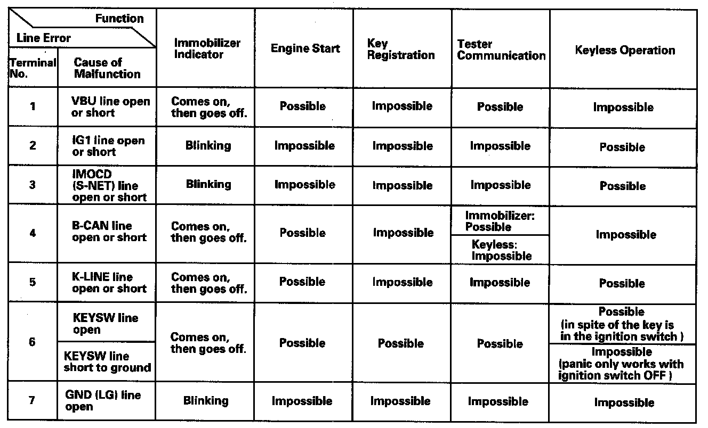

Symptom Troubleshooting Information
Symptom Troubleshooting InformationGeneral Check before Troubleshooting
Before troubleshooting the immobilizer system, check the following general items to minimize troubleshooting time:
- If the battery is low; fully charge the battery, then troubleshoot the immobilizer system.
- The ignition key is not a genuine Honda part; use the Honda-approved key blank, register the key, then troubleshoot the immobilizer system.
- Check to see if a key ring, keys, or a key case is used; remove the key from it, and troubleshoot the immobilizer system with a key only.
- Check to see if an aftermarket electrical part is attached; remove it, then troubleshoot the immobilizer system.
Symptom Troubleshooting Using the Immobilizer Indicator Lighting Pattern
The blinking pattern of the immobilizer indicator light can help troubleshoot the condition of the immobilizer system. Following are descriptions of the four possible patterns.
Normal operation
If the immobilizer code is identified, the immobilizer indicator comes on for a maximum of 2 seconds, then goes off after turning the ignition switch ON (II).
The immobilizer indicator does not come on when the ignition switch is turned OFF.
Immobilizer code is not identified
If the immobilizer code is not identified, the immobilizer indicator comes on for a maximum of 2 seconds, then blinks after turning the ignition switch ON (II). The immobilizer indicator blinks ten times, then goes off when the ignition switch is turned OFF.
The state of the immobilizer key registration and the IMOCD line can be checked by doing a SYSTEM CHECK with the HDS.
Immobilizer indicator does not come on
If the immobilizer indicator does not come on after turning the ignition switch ON (II), an open or short in the F-CAN lines between the PCM and the gauge control module. Watch the malfunction indicator lamp (MIL). If the MIL stays on, go to the PGM-FI system troubleshooting.
Immobilizer indicator does not go off
If the immobilizer indicator does not go off after turning the ignition switch ON (II), do the gauge control module self-diagnostic function. If the indicator drive circuit is OK, do the SYSTEM CHECK with the HDS.

Symptom Troubleshooting Using Malfunctioning Circuit Functions
If a malfunction occurs in the immobilizer circuit, use the table to cross-reference the malfunctioning function to the line(s) that should be checked table:
System Check and Status Log
NOTE: The HDS can be used to:
- Check the state of the immobilizer key registration and the IMOCD (S-NET) line by doing a SYSTEM CHECK.
- Check the number of times the immobilizer control unit-receiver doesn't permit the engine to run by checking the STATUS LOG.
1. Connect the HDS to the data link connector, then turn the ignition switch ON (II) and follow the prompts to the MAIN MENU.
NOTE: If the HDS does not communicate with the vehicle, go to the DLC circuit troubleshooting.
2. At the MAIN MENU, enter IMMOBILIZER, then select the IMMOBILIZER SETUP.
3. Do the SYSTEM CHECK. If there is a system check number, do the troubleshooting for the item indicated.
4. Check the status log using the HDS. Troubleshoot the line with the highest counts. If all the lines are "0" zero, the problem may not be caused by the immobilizer system, check for ignition or fuel problems.
NOTE: Once repaired, clear the status log by removing the No. 4 (40 A) fuse in the main under-hood fuse box or disconnecting the battery.